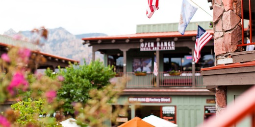

СЕДОНА — небольшой
городок в АРИЗОНЕ,
зАСЛУЖИвающий большего!
Рассмотрим 5 причин, по которым Седона круче, чем гранд каньон!
Настоящий городок
-№1-
СЕДОНА НЕ АТТРАКЦИОН ДЛЯ ТУРИСТОВ, ТАМ ТЕЧЕТ СВОЯ ЖИЗНЬ

ТАМ ЕСТЬ Мост дьявола
-№2-
Да, по нему можно пройти! Если вы осмелитесь, конечно

НЕБОЛЬШАЯ ПЛОЩАДЬ
-№3-
ВСЕ интересные места находятся
очень близко
КРАСИВАЯ ДОРОГА
-№4-
ЕХАТЬ В СЕДОНУ ИЗ ЛАС-ВЕГАСА
совсем НЕ СКУЧНО!
МАЛО ТУРИСТОВ
-№5-
Большинство едет в гранд каньон
и толпится там
ЗАИНТЕРЕСОВАЛИСЬ?
Укажите предполагаемые даты
поездки, и мы покажем вам лучшие
предложения гостиниц в седоне